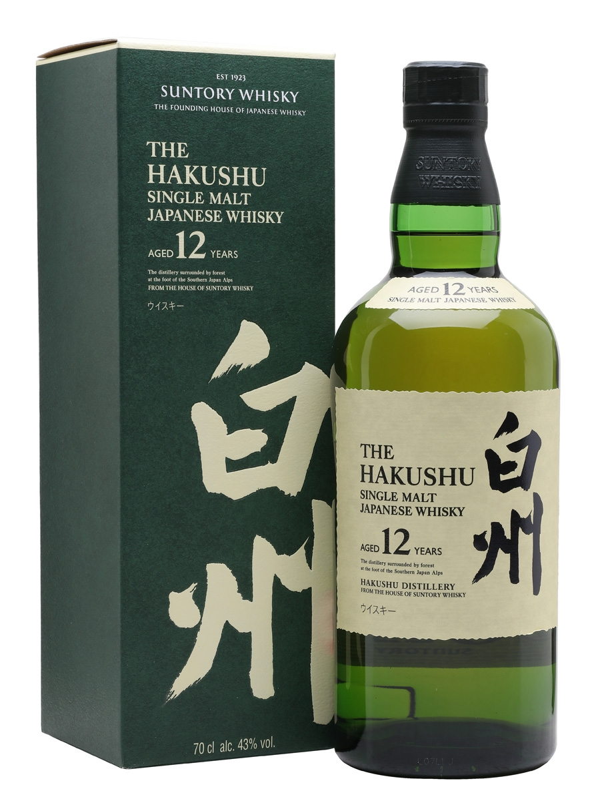
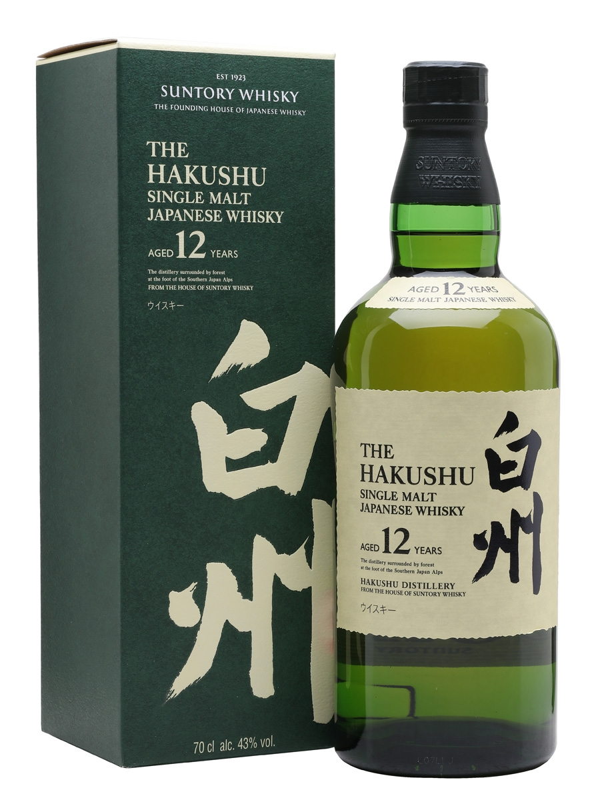
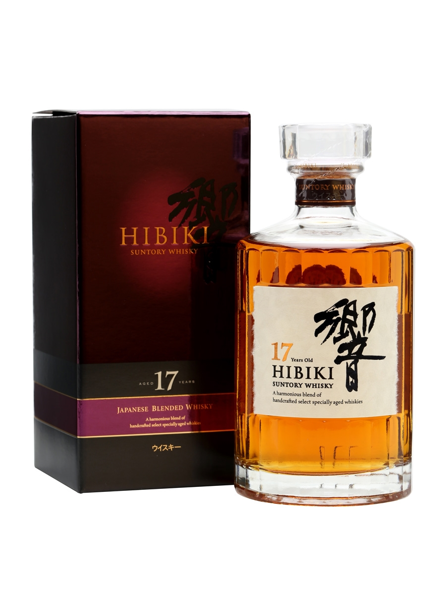
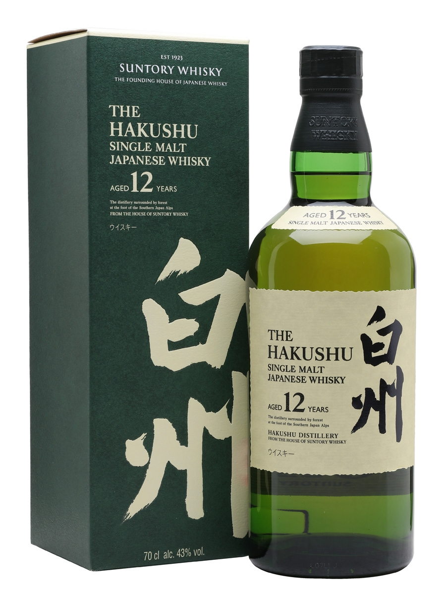

Japanese whisky is a style of whisky developed and produced in Japan. Whisky production in Japan began around 1870, but the first commercial production was in 1924 upon the opening of the country's first distillery, Yamazaki.
